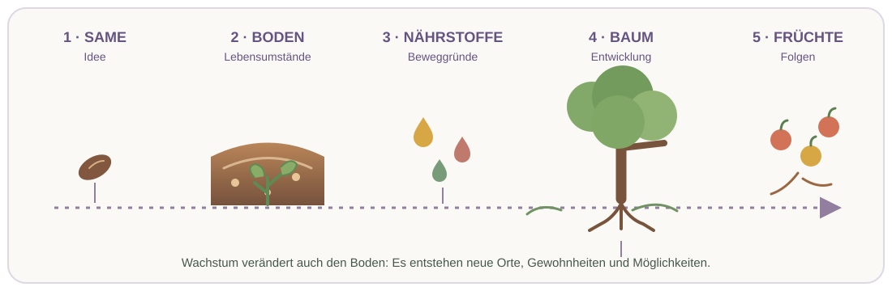

Einführung
Eine Idee kann wachsen – und dabei dich und deine Welt verändern.
Vielleicht beginnt es mit einem einfachen Gedanken: „Ich möchte Musik machen.“ Was daraus wird, lässt sich am Anfang oft noch nicht überblicken. Musik kann ein Hobby bleiben, zu einer wichtigen Gewohnheit werden, Menschen zusammenbringen, einen Beruf prägen oder eigene Werke hervorbringen.
Der Kurs macht keine Motivation zur einzig richtigen. Du kannst aus Liebe zur Musik beginnen, aus Neugier, Ehrgeiz, Glauben, dem Wunsch nach Gemeinschaft oder aus mehreren Gründen zugleich. Wir betrachten, was diese Beweggründe ermöglichen und wo sie Schwierigkeiten mit sich bringen können.
Der Mensch formt die Musik, aber die musikalische Praxis formt zugleich den Menschen und seine materielle Umgebung.

- Der SameEin Wunsch oder eine musikalische Idee.
- Der BodenLebensumstände und verfügbare Möglichkeiten.
- Die NährstoffeBeweggründe, die Energie und Richtung geben.
- Der BaumPraxis, Fähigkeiten, Gewohnheiten und Werke.
- Die FrüchteGute wie schwierige Folgen für dich und andere.
Die Pflanzenbilder sind eine Denkhilfe, keine naturwissenschaftliche Gleichsetzung. Sie helfen uns, verschiedene Fragen auseinanderzuhalten: Was war die erste Idee? Unter welchen Bedingungen wächst sie? Was nährt sie? Was entsteht durch die Praxis?
Kapitel 01 · The Seed
Der Same – die Idee.
Am Anfang steht oft ein Wunsch, eine Sehnsucht oder eine kleine Beobachtung: „Ich möchte Musik machen.“ Vielleicht hast du jemanden spielen hören. Vielleicht begleitet dich ein bestimmtes Lied. Vielleicht möchtest du selbst etwas ausdrücken, das sich schwer in Worte fassen lässt.
Eine erste Idee enthält Möglichkeiten, aber sie legt das spätere Ergebnis nicht fest. Wer ein Instrument ausprobiert, weiß noch nicht, ob daraus eine gelegentliche Beschäftigung, eine Band, ein Studium oder etwas ganz anderes wird. Auch ein kleiner Anfang kann bedeutsam sein, ohne dass daraus ein großer öffentlicher Erfolg werden muss.
Die Idee ist noch kein fertiger Plan
Zwischen dem Gedanken und seiner Verwirklichung liegen Entscheidungen, Zeit, Übung und Umstände. Die Idee kann sich beim Tun verändern. Ein Schüler beginnt vielleicht, weil er ein Lied nachspielen möchte, und entdeckt später Freude an Improvisation oder gemeinsamem Musizieren.
Kapitel 02 · The Soil
Der Boden – deine Lebensumstände.
Eine Idee wächst nicht im luftleeren Raum. Der „Boden“ steht für die Bedingungen, unter denen du Musik machen kannst. Manche davon helfen dir, manche begrenzen dich, und viele sind einfach Teil deiner aktuellen Lebenssituation.
Menschen und Kultur
- Familie und soziales Umfeld
- Kultur, Tradition und musikalische Vorbilder
- Lehrer, Unterricht und musikalische Gemeinschaften
- Freundschaften und gemeinsame Interessen
Ressourcen und Alltag
- Verfügbare Zeit und finanzielle Möglichkeiten
- Gesundheit und körperliche Voraussetzungen
- Zugang zu Instrumenten und Unterricht
- Wohnsituation, Lautstärke und Übungsplatz
- Verpflichtungen und andere Lebensziele
Günstige Bedingungen können den Einstieg erleichtern: ein Instrument im Haus, ein ruhiger Platz oder jemand, der mit dir übt. Schwierige Bedingungen bedeuten nicht automatisch, dass eine Idee nicht wachsen kann. Manchmal braucht es einen anderen Weg – kürzere Übungszeiten, ein geliehenes Instrument, Kopfhörer oder eine Gemeinschaft, die erreichbar ist.
Es hilft, zwischen dem zu unterscheiden, was du verändern kannst, was du mit Unterstützung verändern könntest und was du vorerst annehmen musst. So wird aus einem Hindernis keine Aussage über deinen Wert oder dein Talent.
Kapitel 03 · The Nutrients
Die Nährstoffe – deine Beweggründe.
Beweggründe sind das, was eine musikalische Idee für dich wichtig macht. Sie können zusammen auftreten und sich mit der Zeit verändern. Keiner der folgenden Gründe bestimmt für sich allein, ob deine musikalische Entwicklung gut oder problematisch verläuft.
Was dich anziehen kann
- Liebe zur Musik, Freude und Vergnügen
- Neugier und Entdeckungsdrang
- Sehnsucht nach Schönheit oder eigenem Ausdruck
- Ehrgeiz, Meisterschaft, Selbstverwirklichung und Identität
- Gemeinschaft, Zugehörigkeit, Freundschaft und Verbindung
- Trost und Verarbeitung eigener Erfahrungen
- Dienst an anderen, Glaube, Dankbarkeit und Gottesverehrung
- Geld, beruflicher Erfolg und öffentliche Anerkennung
Gründe, die du ebenfalls prüfen kannst
- Stolz und der Wunsch, bewundert zu werden
- Bewunderung oder Verehrung eines Vorbilds
- Macht und Einfluss
- Angst vor Bedeutungslosigkeit
- Der Wunsch, anderen überlegen zu sein
- Der Wunsch, Erwartungen zu erfüllen oder nicht dazuzugehören
Diese Liste ist kein Urteil über dich. Ein Beweggrund kann ehrlich benannt und anschließend genauer betrachtet werden. Manche Gründe geben Energie, andere werden belastend, wenn sie allein bestimmen, wie du deinen Wert misst.
Ein konstruktiver oder problematischer Verlauf hängt oft davon ab, wie ein Beweggrund gelebt wird und welche anderen Werte ihn begleiten. Die gleiche Motivation kann in verschiedenen Lebensphasen unterschiedliche Folgen haben.
Kapitel 04 · The Growing Tree
Der wachsende Baum – die Idee wird Praxis.
Eine Idee verändert das Leben durch konkrete Handlungen. Regelmäßiges Üben, gemeinsames Musizieren und Entscheidungen im Alltag können Fähigkeiten und Gewohnheiten entwickeln. Diese Veränderungen entstehen schrittweise und unterscheiden sich von Mensch zu Mensch.
Geist und Wahrnehmung
Beim Lernen richtest du Aufmerksamkeit auf Klang, Rhythmus und Bewegung. Du übst, dich zu konzentrieren, musikalische Verläufe zu erinnern, Unterschiede zu hören, musikalische Vorstellungskraft und Urteilskraft zu entwickeln und eigene Entscheidungen zu treffen. Wiederholung kann Geduld und Ausdauer verlangen; Pausen und passende Ziele gehören ebenfalls zum Lernen.
Körper und Gewohnheiten
Singen und Spielen beziehen Atmung und Atemkontrolle, Haltung, Koordination und feinmotorische Bewegungen ein. Langsame, aufmerksame Wiederholungen geben dir Gelegenheit, Bewegungsabläufe kennenzulernen und motorisches Lernen zu unterstützen. So kann sich dein Verhältnis zu Zeit und Wiederholung verändern: Du bemerkst, was du durch geduldige Praxis allmählich sicherer ausführen kannst. Achte auf unnötige Anspannung und darauf, Belastung schrittweise zu steigern.
Zeit und Lebensführung
Übungszeiten können einen Platz im Tages- oder Wochenablauf erhalten. Dafür setzt du Prioritäten, planst Ziele und entscheidest, wie viel Zeit du investieren möchtest. Musik muss nicht jede freie Stunde beanspruchen; ein tragfähiger Rhythmus passt zu deinem übrigen Leben.
Beziehungen und Gemeinschaft
Jamsessions, Bands, Unterricht und gemeinsames Lernen können Begegnungen und Freundschaften ermöglichen. Zusammenarbeit braucht Zuhören und gegenseitige Unterstützung. Dabei können auch Konkurrenz, Eifersucht, Neid, Kritik und Bewunderung auftreten – sie gehören zu den Erfahrungen, die du bewusst gestalten kannst.
Öffentliches Leben und Identität
Konzerte und Auftritte bringen Musik in eine gemeinsame Situation. Lampenfieber, Bühnenpräsenz, Lob, Kritik oder Ablehnung können Erfahrungen damit werden, sich öffentlich zu zeigen. Eine Identität als Musiker kann wachsen, muss aber nicht deine ganze Identität bestimmen. Mit dem Auftreten wächst auch Verantwortung gegenüber Zuhörern und Mitmusikern.
Wenn eine Idee materielle Gestalt annimmt
Die Idee „Ich möchte Musik machen“ kann konkrete Dinge in der Welt entstehen lassen. Du kaufst, leihst oder baust ein Instrument. Vielleicht kommen Verstärker, Mikrofone, Notenständer, Kopfhörer und Aufnahmegeräte hinzu. Du richtest einen Übungsplatz ein oder gestaltest einen Raum um. Du beschaffst Unterrichtsmaterial und Noten, schreibst eigene Aufzeichnungen oder komponierst.
Durch Übung entwickelst du körperliche Fähigkeiten und wiederholte Bewegungsmuster. Du nimmst Musik auf, organisierst Proben und Jamsessions oder bringst Menschen für ein Konzert an einem bestimmten Ort zusammen. Ausgaben, Verkäufe und möglicherweise Einkommen können dazugehören. Werke und Situationen entstehen, die ohne deine ursprüngliche Idee nicht vorhanden wären.
Eine Idee kann durch menschlichen Willen und menschliches Handeln Materie, Raum, Zeit und den eigenen Körper ordnen und verändern. Die materielle Welt ist nicht nur der Boden, in dem die Idee wächst: Sie wird durch das Wachstum selbst mitverändert.
Kapitel 05 · The Fruits
Die Früchte – was daraus hervorgehen kann.
Eine musikalische Entwicklung kann Können, Freude, persönliche Erfahrungen, Freundschaften, gemeinsame Erlebnisse, kreative Werke und berufliche Möglichkeiten hervorbringen. Musik kann das Leben anderer bereichern, Schönheit teilen und – für manche Menschen – Dienst oder Gottesverehrung ausdrücken.
Es können auch schwierige Folgen entstehen: Überforderung, Erschöpfung, Perfektionismus, Neid, Konkurrenz, Überheblichkeit oder Abhängigkeit von Anerkennung. Beziehungen können zu kurz kommen; Ausrüstung und Unterricht können finanziell belasten. Körperliche Überlastung ist möglich, wenn Belastung und Erholung nicht zusammenpassen. Auch die ursprüngliche Freude kann schwächer werden.
Erfolg ist nicht dasselbe wie ein gutes Leben
Technischer Fortschritt und öffentlicher Erfolg beantworten nicht allein die Frage, ob die eigene Praxis einem insgesamt guttut. Ein sehr versierter Musiker kann unglücklich sein. Ein Mensch mit bescheidenen Fähigkeiten kann durch gemeinsames Musizieren viel Freude und Verbundenheit hervorbringen. Das sind keine festen Gegensätze, sondern Erinnerungen daran, verschiedene Früchte getrennt anzuschauen.
Nicht jeder große Baum trägt gute Früchte. Die Größe einer musikalischen Laufbahn sagt für sich allein noch nicht, welche Folgen sie für den Menschen und sein Umfeld hat.
Kapitel 06 · Cultivating Your Reason
Deinen Beweggrund bewusst pflegen.
Du musst deinen Grund nicht ein für alle Mal finden. Ein Leitbild ist eine Momentaufnahme: Es hält fest, was dir jetzt wichtig ist und welche Art von musikalischem Leben du anstrebst. Du kannst es später erneut lesen und verändern, wenn sich deine Erfahrungen oder Ziele wandeln.
Antworte ehrlich, aber nicht so, als gäbe es eine erwartete Musterlösung. Du darfst verschiedene oder widersprüchliche Beweggründe benennen. Überlege auch, welche Verpflichtungen, Beziehungen und Grenzen zu deiner Vorstellung gehören.